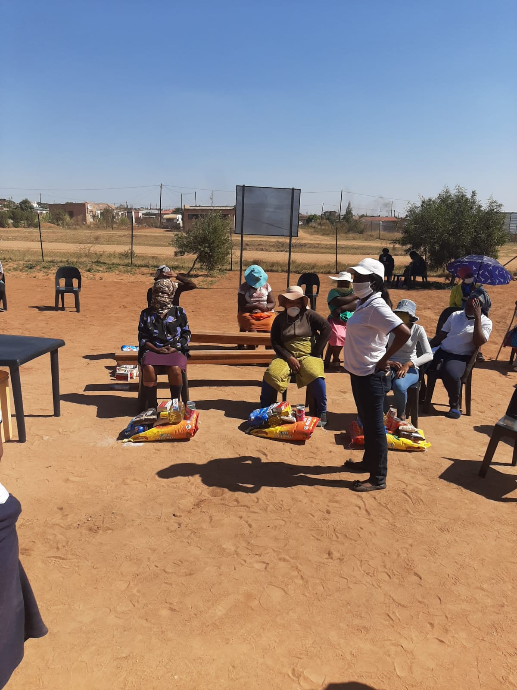

Empowering Our Elderly & Community
Sephapose Old Age Care Centre provides a safe, welcoming, and compassionate environment for elderly people in Ga-Mothapo. Join us in our mission to build a modern care facility and secure vital infrastructural funding.
🚨 Urgent Infrastructure Deficits & Funding Focus
To expand our care capacity and protect our seniors, we are actively raising capital for:
- Borehole Station Repairs: Ensuring reliable water supply for the centre and community garden.
- Secure Perimeter Fencing: Protecting residents and property at Stand 666, Ga-Mothapo.
- Separate Sleeping Quarters & Daycare Playground: Upgrading facilities for elderly residents and children.
How Can You Help?
There are many ways you can become part of the Sephapose community and make a lasting impact.
Sponsor UsYour corporate social investment (CSI) or grant support helps us provide better care, resources, and infrastructure. |
VolunteerGive your time, skills, and kindness to make a meaningful difference in the lives of elderly people. |
Get In TouchHave questions, partnership proposals, or want to learn more about Sephapose? Contact our team today. |
Donations Received & Major Partners
Click below to view organizations and shops that have funded or assisted the Sephapose Old Age Centre (such as the Hollywoodbets Foundation).

Our Mission & Vision
Our Mission
To provide compassionate and respectful care to elderly people while creating an environment where they can live with dignity, comfort, and purpose.
Our Vision
To build a caring, modern community where every elderly person feels valued, respected, safe, and connected.
Our Core Values
| Value | Commitment |
|---|---|
| Care | We treat every person with kindness, patience, and compassion. |
| Dignity | We respect the individuality and dignity of every elderly person. |
| Respect | We value every person and listen to their needs, experiences, and wishes. |
| Community | We believe strong communities create better lives for everyone. |